Foodventures
Food is Love, Food is Life
Food
From left to right: Spanakopita dinner from Joe Feta's, Tikka masala pizza from East Bay Spice Company (Downtown Berkeley), Lunch at Gords, Brunch at Fran's
 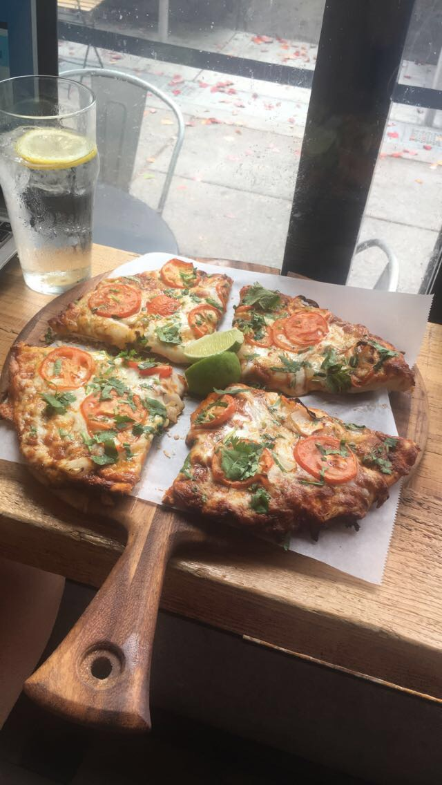
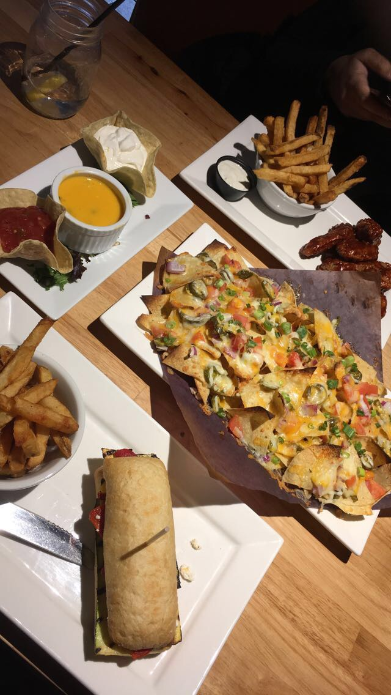
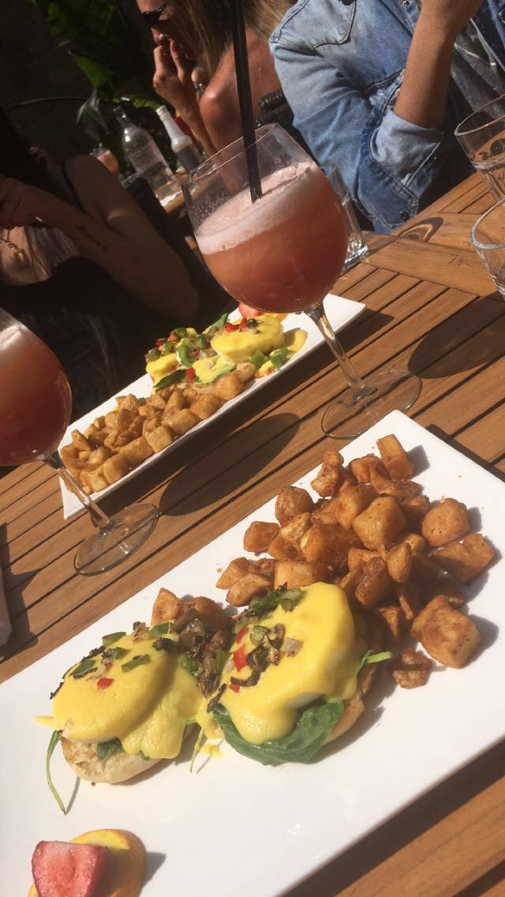
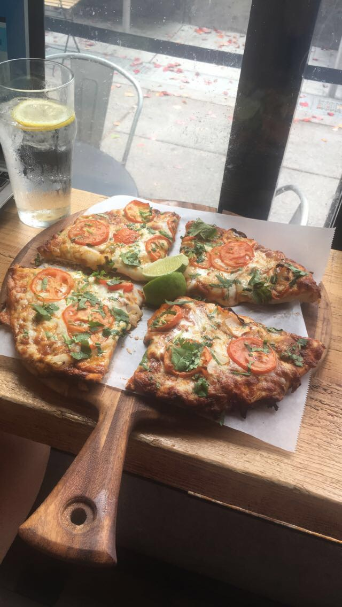
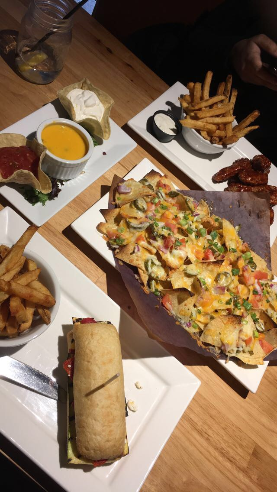
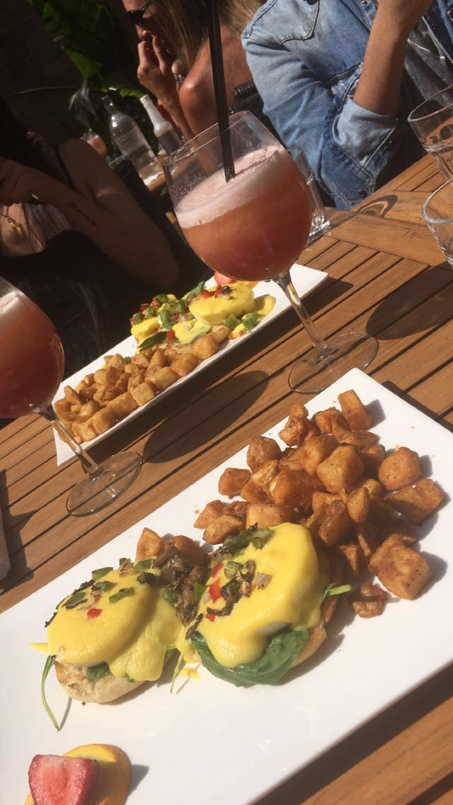
Drinks
From left to right: Iced coffee from Peet's Coffee (San Francisco), Iced coffee from Joe and the Juice (San Francisco)
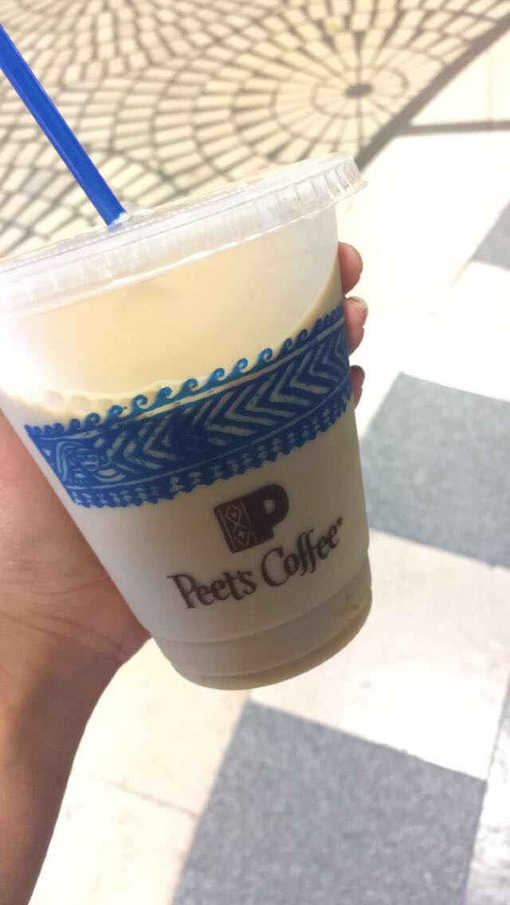 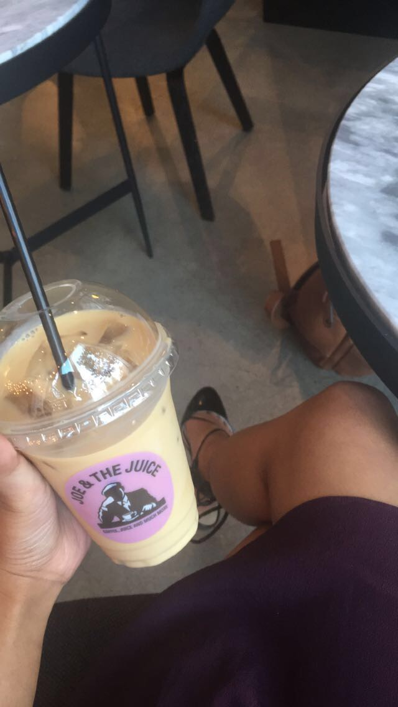Dessert
From left to right: Icecream from Ben and Jerry's (Downtown Berkeley), Doughnuts from Beechwood Doughnuts, Japanese green tea icecream sundae from Tsujiri
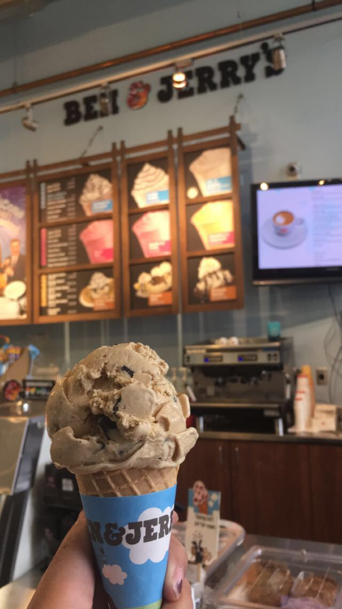 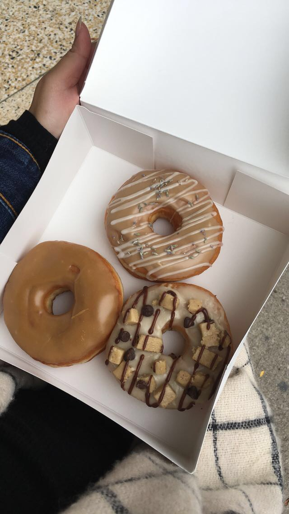 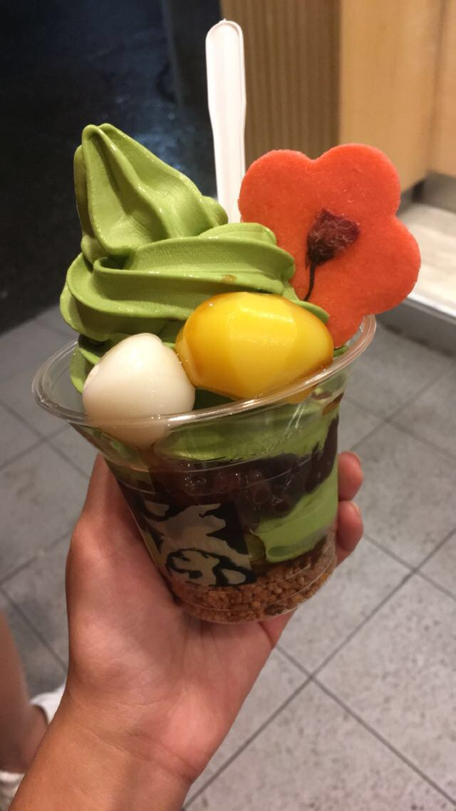